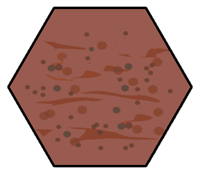
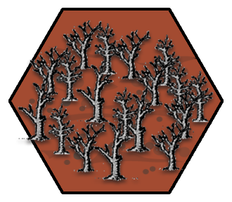
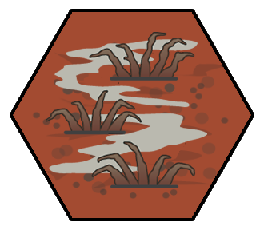
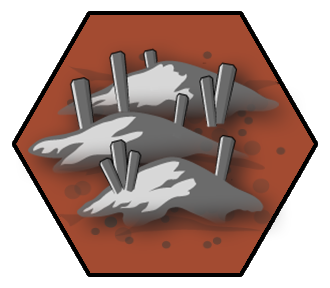
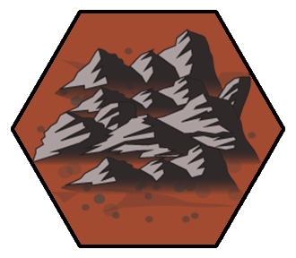
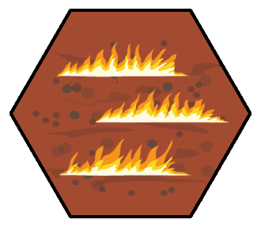
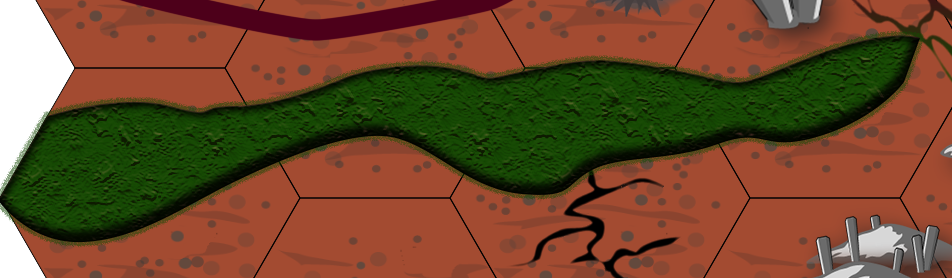
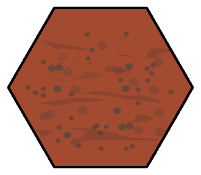
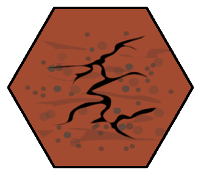
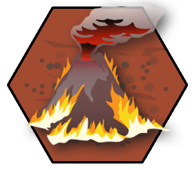

This is the DM's map for running the Avernian hexcrawl. It's designed for use with the Alexandrian Hexcrawl, as described in the 5E Hexcrawl series. We'll be making some tweaks to this structure, however, to accommodate the unusual features of Avernus.
HEX SCALE
1 Hex = 40 miles (center to center / side to side) = 23 mile sides = 1385 square miles
The Avernian Hexcrawl uses 40 mile hexes. When tracking progress, this means it requires 20 miles of progress to exit a hex through one of the two nearest faces. (If they exit back through the face through which they entered the hex for a reason other than doubling back along their own trail, it requires 2d10 miles of progress to exit the hex, unless circumstances suggest some other figure.)
Design Note: The primary reason for choosing a 40 mile scale is because the PCs are likely to end up using infernal machines with much higher speeds of travel. The secondary reason is aesthetic: Avernus is supposed to be a wasteland. By increasing the scale of the hexes, we achieve that (increasing the average distance between points of interest).
AVERNIAN TERRAIN
The wasteland of Avernus is scattered with rocks of obsidian and quartz. There're mountains dotting the bloody-dusty plain, and foothills march across the land like the overturned tracks of some gargantuan, unknown beast. - Planes of Law (1995)
|  |
ASHLANDS The ground here is covered in a thick layer of black ash, generally varying in depth form six to eighteen inches. The ash does not easily compress or support weight, so travelers will often find themselves more or less wading through the ash. |
|  |
BONE BRAMBLES A maze of warped trees and bonelike vines. Calcified corpses merge with the trees, covered in fungal pods that feed on the blood oozing through the undergrowth. Experienced Avernian explorers know that bone brambles often grow up around sources of fresh water. |
|  |
CAUSTIC BOGS On the current map, the caustic bogs are formed from the polluted run-off from Bel's Forge (Hex H2), but similar areas can be found across Avernus, horrific remnants of the Blood War. While travelling through the caustic bogs, characters must succeed on a DC 12 Constitution saving throw each watch or gain the Poisoned condition. The character can repeat the saving throw every 24 hours, ending the effect on itself on a success. |
|  |
HILLS, AVERNIAN Either low mounds that undulate out of the wastelands or jagged promontories of razor-like rock that jut toward the blood red sky. The native life of Avernus, such as it is, often clings and clusters in the hills. |
|  |
MOUNTAINS, AVERNIAN There are generally two types of mountains in Avernus. Newer mountains that thrust up like broken blades of obsidian; raw and dangerous. And the older mountains that have been worn down by countless aeons, their gray immensity aching with an age incalculable to the mortal soul. |
|  |
PLAINS OF FIRE An iridescent, tarry putrescence seeps up through the soil here. These alchemical slicks catch on fire, a combination of small ever-burning wells and huge infernos miles long and high. Failing a navigation check in the plains of fire, at the DM's discretion, may indicate that the group has gotten cut off by a rapidly spreading fire, trapping the PCs in the eye of a firestorm. It is never considered a clear day in the Plains of Fire. |
|  |
PIT OF SHUMMRATH A grand canyon more than a mile deep and filled with a lake of green slime that undulates as though breathing. The slime is actually the protoplasmic residue of an ancient devil imprisoned here by Archduke Bel many centuries ago, still possessed of some residual sentience and a telepathic ability to communicate (see p. 100 of Descent Into Avernus). Large sections of the Shummrathian slime actually have a very thick skin, allowing the brave and foolhardy to walk across its slightly undulating surface. In slightly less gelatinous sections of the Pit, barges can dredge their way across. |
|  |
WASTELANDS The wastelands of Avernus look like sand, but are mostly made up of hard, sharp rocks akin to the quartzes and obsidian of the Material Plane. Footing can be treacherous. |
|  |
WASTELANDS, CRACKED The surface of Avernus is a rotten rind stretched across a festering fruit. In places, the ground has split apart. In cracked regions of the wastelands, the land is riven with fissures and ravines. Navigating these regions is difficult, either requiring great effort to circle around impassable chasms, or maze-like passages through the fissures themselves. |
|  |
VOLCANIC PLAINS Vast, smooth plains of black, basaltic rock. Sometimes shattered by tectonic upheavals. Often studded with fissure vents and bubbling pools of fresh lava. An unusual feature of Avernian volcanic plains are the kipukas: Isolated areas of older lava flows surrounded by newer flows. On Avernus, these kipukas are often etched with the characters of some ancient and utterly forgotten tongue. |
| Terrain | Highway | Road/Trail | Trackless | Navigation DC | Forage DC |
|---|---|---|---|---|---|
| Ashlands | x1 | x1 | x ½ | 12 | 24 |
| Bone Brambles | x1 | x1 | x ½ | 18 | 16 |
| Caustic Bogs | x1 | x ¾ | x ½ | 15 | 20 |
| Hills, Avernian | x1 | x ¾ | x ½ | 14 | 18 |
| Mountains, Avernian | x ¾ | x ¾ | x ½ | 16 | 22 |
| Plains of Fire | x1 | x ¾ | x ½ | 14 | 24 |
| Pit of Shummrath | x1 | x ¾ | x ¼ | 15 | 22 |
| Wastelands | x1 | x1 | x ¾ | 12 | 20 |
| Wastelands, Cracked | x1 | x ¾ | x ½ | 16 | 20 |
| Volcanic Plains | x1 | x ¾ | x ¾ | 12 | 24 |
Note: Although values are given for Highway speed, there are no such causeways in this section of Avernus. (They're quite rare in Avernus in general.)
THE STYX
The effects of the River Styx are described on p. 76 of Descent Into Avernus.
It should be noted that these effects apply only to the waters of the river itself. The Styx is fed by a number of tributaries which do not share these effects until they join the main channel of the Styx. In Avernus, these tributaries may be water, but are more likely to be fouler effluvia. (In places within Avernus there are whole systems of rivers and lakes filled with nothing but the blood and bile and other fluids of mortal creatures spilling down into the Styx.)
NAVIGATING AVERNUS
Avernus… Its blasted, rock-strewn fields gape like festering wounds under a crimson sky. Neither stars nor sun brighten the infinite reach of this layer's sky, for the blood-red light emanates from the air itself. There's no way to keep time in Avernus, save by the screaming of the [suffering]. - Planes of Law (1995)
COMPASS DIRECTIONS: Cardinal and ordinal directions don't exist in Avernus. (There is no rising sun, no stars in a night sky, and no magnetic field for aligning compasses.) This imposes disadvantage to navigation checks until a navigator has adapted to the oddities of Avernian geography (by successfully reaching an intended destination for the first time).
PLANAR COMPASS: A planar compass is a technomantic device which allows for navigation in the Outer Planes. A planar compass aligns to the nearest planar borders. In this particular region of Avernus that corresponds to the planar borders with Dis (to the “north” side of our map) and the Abyss (to the “east”). Thus Dis-ward, Abyss-ward, contra-Dis, and contra-Abyss.
Design Note: For simplicity, you might still want to use the familiar cardinal directions at the table. Here's one way you could justify that: The word “north” actually derives from a word meaning “left” because it was the direction to the left of the rising sun. You could hypothesize an Avernian dialect in which the direction towards the Abyss (and the front lines of the Blood War) is adversa, and “Avernian north” is the direction to the left of that. In translation to the Common tongue, the common names - north, east, south, west - are extrapolated accordingly.
SIGHTING MOUNTAINS: In the absence of stars, sun, or magnetic fields, navigation in Avernus relies heavily on landmarks. In this particular region of Avernus, this is greatly aided by the Dispatrian Mountains that lie Dis-ward and the Praefervian Mountains to the contra-Dis.
On a clear day, both mountain ranges can be seen at a distance of two hexes (80 miles), but will frequently only be visible from 1 hex away. The thick haze of the Avernian atmosphere, however, usually reduces this to a single hex. Volcanic peaks indicated on the map (like Bel's Forge in Hex H2) can similarly be seen at a distance of 1-2 hexes.
IDENTIFYING MAP LOCATIONS: If the PCs make inquiries, assume that Avernian natives can identify 1d6-1 locations on the player's map.
OTHER AVERNIAN GUIDELINES
FORAGING: Food and water - particularly that suitable for mortal consumption - is hard to come by in Avernus. The native flora and fauna have a bitter or ashen flavor, and even drinkable water usually tastes foul.
Mortals make forage checks in Avernus at disadvantage. (Hell is not a place for mortals.) This does not apply to characters with demonic or devilish heritage (such as tieflings), who will find a broader range of Avernian wildlife suitable for their palates.
SPOTTING DISTANCE: Avernus is flat, which means there's no horizon to block vision. With a clear line of sight you could hypothetically see an infinite distance… if it wasn't for the atmosphere. On a perfectly clear day on Earth you can see about 150 miles through the atmosphere, but such conditions are rare on Earth and virtually impossible in Avernus.
Assume a 1 in 6 chance of a clear day.
On a typical day:
On a clear day (by Avernian standards):
UNSUITABLE TERRAIN: Land vehicles perform poorly in unsuitable terrain. Infernal war machines are well-suited to the Avernian wastelands, however, and are likely to only find mountainous terrain unsuitable. At the DM's discretion they might also find unusual terrain like the Pit of Shummrath or the caustic bogs similarly problematic.